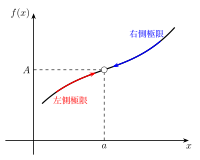
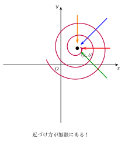
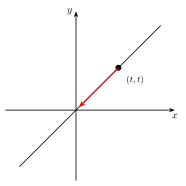
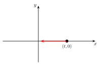
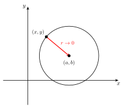
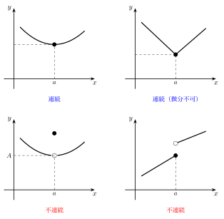
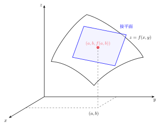
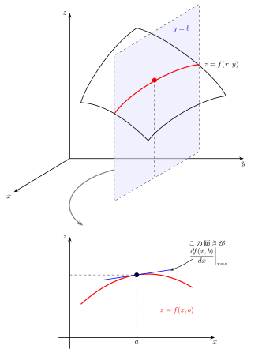
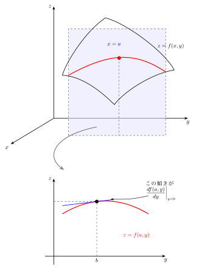

第2回：偏微分
2変数関数の極限
1変数の場合の復習
\(x\) が \(a\) と異なる値をとりながら \(a\) に近づくとき、\(f(x)\) の値が \(A\) に近づくならば
と書く。

極限の存在条件：右側極限と左側極限が一致すること。
2変数の場合
2変数の場合、\(f(x, y)\) において \((x, y)\) のある点 \((a, b)\) への近づけ方が無数にある。

注意
極限を考える点は定義域 \(D\) に含まれる必要はない。
例
\(\displaystyle f(x, y) = \frac{2xy}{x^2 + y^2}\), \((x, y) \neq (0, 0)\)
\((x, y) \to (0, 0)\) での極限はどうなるか？
① 直線 \(y = x\) に沿って近づける

② \(x\) 軸に沿って近づける (\(y = 0\))

経路によって極限値が異なるので、極限は存在しない。
極座標による判定法
\(f(x, y)\) が点 \((a, b)\) で極限をもつためには \((x, y) \to (a, b)\) の近づけ方によらず \(f(x, y)\) がある値 \(A\) に近づく必要がある。

\(\sqrt{(x-a)^2 + (y-b)^2} = r\) とすると、\(x = a + r\cos\theta\), \(y = b + r\sin\theta\) である。
\((x, y) \to (a, b)\) の近づけ方によらず \(f(x, y)\) がある値 \(A\) に近づくということは、
が \(\theta\) に依存しないことである。
このとき、\(\displaystyle\lim_{(x,y) \to (a,b)} f(x,y) = A\) と書く。
例題
例題 1
\(\displaystyle\lim_{(x,y) \to (0,0)} \frac{2x - y + 5}{1 + x^2 + y^2}\)
解：分母・分子ともに連続なので、そのまま代入できる。
例題 2
\(\displaystyle\lim_{(x,y) \to (0,0)} \frac{x}{x^2 + y^2}\)
解：\(x\) 軸に沿って近づける（\(y = 0\)）と
\(\displaystyle\lim_{x \to +0} \frac{1}{x} = +\infty\), \(\displaystyle\lim_{x \to -0} \frac{1}{x} = -\infty\) であるから、極限は存在しない。
例題 3
\(\displaystyle\lim_{(x,y) \to (0,0)} \frac{x^3}{x^2 + y^2}\)
解：
- \(x\) 軸に沿う：\(f(x, 0) = x \to 0\)
- \(y\) 軸に沿う：\(f(0, y) = 0\)
- \(y = x\) に沿う：\(f(x, x) = x/2 \to 0\)
すべての経路で \(0\) だが、これだけでは不十分。極座標で確認する。
\(|\cos^3\theta| \leq 1\) なのではさみうちの原理を使って $$ |f(r\cos\theta,\, r\sin\theta) - 0| \leq |r| \to 0 \quad (r \to 0) $$
例題 4
\(\displaystyle\lim_{(x,y) \to (0,0)} \frac{xy}{\sqrt{x^2 + 3y^2}}\)
解：極座標で
例題 5
\(\displaystyle\lim_{(x,y) \to (0,0)} \frac{\sin(xy)}{x^2 + y^2}\)
解：
第1因子は \(\displaystyle\lim_{t \to 0} \frac{\sin t}{t} = 1\) より \(1\) に近づく。
第2因子は \(y = x\) に沿うと \(1/2\)、\(y = 0\) に沿うと \(0\) であり、極限なし。
\(\therefore\) 極限は存在しない。
2.1 極限の性質
\(D \subset \mathbb{R}^n\), \(f \colon D \to \mathbb{R}\), \(g \colon D \to \mathbb{R}\) とする。
\(A \in D\) に対し \(\displaystyle\lim_{P \to A} f(P) = \alpha\) かつ \(\displaystyle\lim_{P \to A} g(P) = \beta\) のとき：
-
\(c, d \in \mathbb{R}\) に対し \(\displaystyle\lim_{P \to A} \left[c\,f(P) + d\,g(P)\right] = c\alpha + d\beta\)
-
\(\displaystyle\lim_{P \to A} f(P)\,g(P) = \alpha\beta\)
-
\(g(P) \neq 0\) (\(P \in D\)) かつ \(\beta \neq 0\) のとき \(\displaystyle\lim_{P \to A} \frac{f(P)}{g(P)} = \frac{\alpha}{\beta}\)
2.2 連続関数
\(f\) が \(D\) の点 \((a_1, \ldots, a_n)\) で連続であるとは
が成り立つことである。

例題
次の関数は \((0, 0)\) で連続か？
解：極座標で
\(\therefore\) \((0, 0)\) で連続である。
連続関数の演算
関数 \(f\) と \(g\) が \(D\) の点 \(A\) で連続ならば
- \(cf + dg\) も \(A\) で連続
- \(fg\) も \(A\) で連続
- \(f/g\) も \(A\) で連続（\(g(P) \neq 0\) のとき）
2.3 偏微分（Partial derivative）
1変数の微分の復習
\(y = f(x)\) の微分（または導関数）は
\(f'(x)\) は \(\dfrac{\mathrm{d}f(x)}{\mathrm{d}x}\) とも書く。
\(x = a\) における \(f(x)\) の導関数の値 \(f'(a)\) を \(f(x)\) の \(x = a\) における微分係数という。
これは \(y = f(x)\) の \(x = a\) における接線の傾きを表す。
2変数への拡張
\(z = f(x, y)\) は曲面なので、微分係数を求めることは \((x, y) = (a, b)\) における接平面の傾きを求めることである。

平面の方程式は \(z = \alpha x + \beta y\) の形なので、傾きは2つある。
\(x\) に関する偏微分
曲面 \(z = f(x, y)\) を \(y = b\) で切った断面 \(z = f(x, b)\) を考える。

\(f(x, y)\) が点 \((a, b)\) において \(x\) に関して偏微分可能とは、\(F(x) = f(x, b)\) が \(x = a\) で微分可能、すなわち
が存在することである。この \(F'(a)\) を、\(f\) の \((a, b)\) における \(x\) に関する偏微分係数 といい、
と書く（\(\partial\) はラウンド、デル、パーシャルなどと呼ばれる）。
\(y\) に関する偏微分
同様に、\(G(y) = f(a, y)\) として

を \(f\) の \((a, b)\) における \(y\) に関する偏微分係数 といい、\(f_y(a, b)\), \(\dfrac{\partial f}{\partial y}(a, b)\) と書く。
偏導関数
を \(f(x, y)\) の \(x\) に関する偏導関数 という。
同様に
を \(f(x, y)\) の \(y\) に関する偏導関数 という。
\(f(x, y)\) から \(f_x(x, y)\) を求めることを \(f\) を \(x\) で偏微分する という。
3変数以上への拡張
3変数以上の場合も同様に定義される。
偏微分の計算方法
\(\dfrac{\partial f}{\partial x}\) は \(x\) 以外の変数をすべて定数とみなして、\(x\) で1変数と同様に微分すればよい。
例題 1
\(f(x, y) = x^2 y^3\)
解：
定義に基づく計算：
同様に
\(y\) を定数とみなして微分すれば、直ちに \(\dfrac{\partial f}{\partial x} = 2xy^3\) が得られる。
例題 2（p.184）
\(\displaystyle f(x, y) = \frac{x}{y}\)
解：
例題 3（p.184）
\(f(x, y) = \sin(2x - y)\)
解：
例題 4（p.185）
\(f(x, y) = e^x \sin y\)
解：
偏微分可能性と連続性
1変数のときは「微分可能 \(\Rightarrow\) 連続」であった。
2変数のときは 「偏微分可能 \(\Rightarrow\) 連続」は成り立たない。
反例
偏微分可能であること：
\(\therefore\) 偏微分可能。
連続でないこと：\(y = x\) に沿って \((0, 0)\) に近づけると
\(\therefore\) 連続でない。
連続であるためには、\((x, y)\) をすべての方向から近づけても \(f(x, y)\) が同じ値に近づく必要がある。一方、偏微分は \(x\) 軸・\(y\) 軸に沿った変化しか見ていない。
\(\longrightarrow\) 「全微分」 が必要（次回以降で扱う）。
演習問題
演習 1
\(\displaystyle f(x, y) = \frac{x}{x + y}\) の偏導関数を求めよ。
解答
演習 2
\(f(x, y) = \sqrt{x^2 + y^2}\) の偏導関数を求めよ。
解答
演習 3
\(f(x, y) = e^{ax} \sin(by)\) の偏導関数を求めよ。
解答
演習 4
\(f(x, y) = \ln(x^2 + y^2)\), \((x, y) \neq (0, 0)\) の偏導関数を求めよ。
解答
演習 5
\(\displaystyle f(x, y) = \tan^{-1}\!\left(\frac{x}{y}\right)\) の偏導関数を求めよ。
解答
\(\dfrac{\mathrm{d}}{\mathrm{d}u}\tan^{-1}(u) = \dfrac{1}{1 + u^2}\) を用いる。